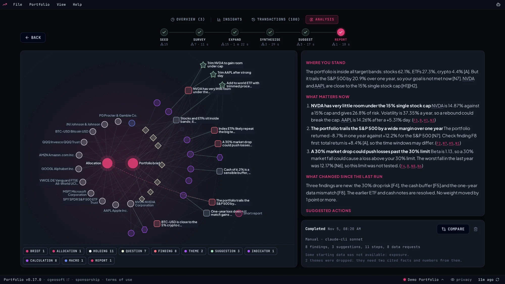
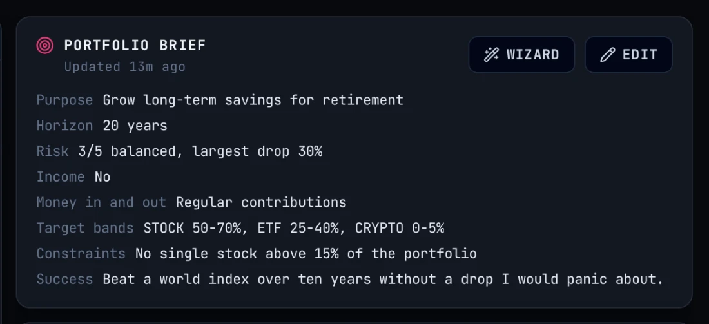
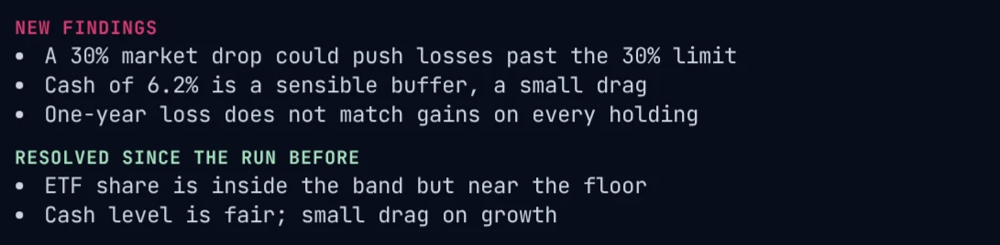
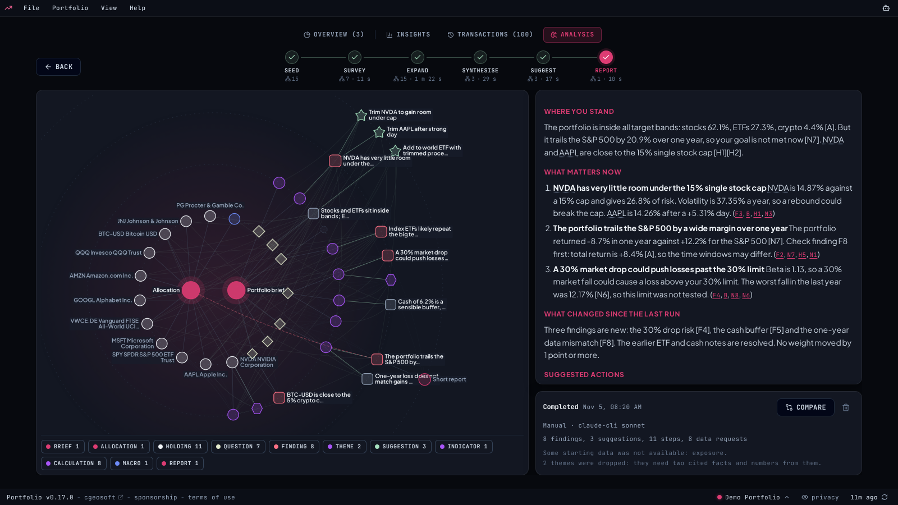

Findings
No claim without a source
A finding must cite fact nodes, and every number in it must exist in a node it cites. One repair turn, then the claim is dropped.
Portfolio is a free investment tracker that runs on your computer. Guided Analysis checks your holdings against your own goal, builds a graph of evidence, and shows the path behind every suggestion.
.deb | also for
Guided Analysis
This is a real run on the demo portfolio, not a mock-up: 44 nodes in the same graph the app draws. Click a stage, a node or a citation.

Why this?
Ask why and the graph narrows to one path: the part of your brief it serves, the findings it acts on, the evidence behind them, and the evidence against.
Guardrails
The app fetches the data, does the math and checks every answer. The model picks what to look at and writes the reasoning.
Findings
A finding must cite fact nodes, and every number in it must exist in a node it cites. One repair turn, then the claim is dropped.
Suggestions
A suggestion must act on a finding of the same run. It then passes the same checks as every other suggestion in the app.
Privacy
Every node passes a privacy gate. Amounts and quantities stay in a field no prompt reads, so the model works from weights.
Limits
Around the graph
Say what the portfolio is for, how far it may fall and what success looks like. A wizard asks a few questions and drafts it. Every finding is measured against it.

See new, resolved and open findings since the last analysis, and how the weights moved.

Pick the portfolios and the app runs an analysis for each, then pushes a summary to your phone over Gotify or ntfy. App closed at that time? It catches up on a start within two days.
Any OpenAI-compatible model with tool calling, local or in the cloud, or the Claude and Codex CLIs. Run it on Ollama and the model runs on your computer. Price lookups still send tickers.
Tour
Real screenshots of the app with the demo portfolio. Click a marker to look closer.

Privacy
Stays on your disk
Leaves, and only this
Privacy gate
Code enforces this, not a line in a prompt. Before a prompt leaves, the app reads every number in it. If one equals an amount or quantity in your ledger, the send stops.
Features
Stocks, ETFs and crypto from Yahoo Finance, converted to your base currency.
CSV and Excel from Trade Republic, Trading 212, Scalable Capital, Interactive Brokers, DEGIRO, eToro, Revolut, XTB and Saxo, with a dry-run preview.
Ollama, llama.cpp, LM Studio, any OpenAI-compatible key, or the Claude and Codex CLIs.
Sector, country and the stocks inside your funds, with overlap warnings. On the new Insights tab.
Dividends received and expected, yields and the next ex-dividend dates.
Treasury yields, sectors and the economic calendar in one place.
A scheduled write-up each morning. Missed one while the app was closed? It runs on the next start.
SMA 50/200, RSI 14 and 52-week range for every position.
Sandboxed WebAssembly cards. Browse them in the catalog.
Let Claude Desktop, Claude Code or Cursor read your portfolio. Read-only, and percentages only.
Lock it with a PIN, then open it from your phone on the same network.
Everything lives in one database on your disk. Back it up by copying the file.
Downloads
Free, MIT licensed, built from the public source.
Older versions and release notes live on GitHub releases.
FAQ
A portfolio, a brief and a model that can call tools, or the Claude or Codex CLI. A run takes a few minutes and you can leave the page while it works. Without a model, the tracker, Insights and the metric modules still work.
No. Portfolio never connects to your broker. It suggests changes and you decide. It is a record and a research aid, not financial advice.
Weights, percentages, tickers and public market data. Never amounts, quantities or balances. The app computes those on your computer when it turns a suggestion into shares.
In one database file on your computer. No servers, no account. Back it up by copying the file.
The app asks Yahoo Finance for prices directly from your computer. Only the ticker symbols leave; your holdings and values never do. Finnhub and Financial Modeling Prep work the same way if you add a key.
The one you set up. A local runtime keeps these requests on your computer. A cloud key or a CLI sends requests straight to that provider, never through a server of ours. Chats and briefs carry percentages, weights and tickers, not money amounts.
On your home network, yes. Set a PIN in Settings, Privacy & Security, switch on Open on other devices, then open the address in your phone's browser.
Nothing. It is open source under the MIT License, with no subscription and no portfolio size limit.